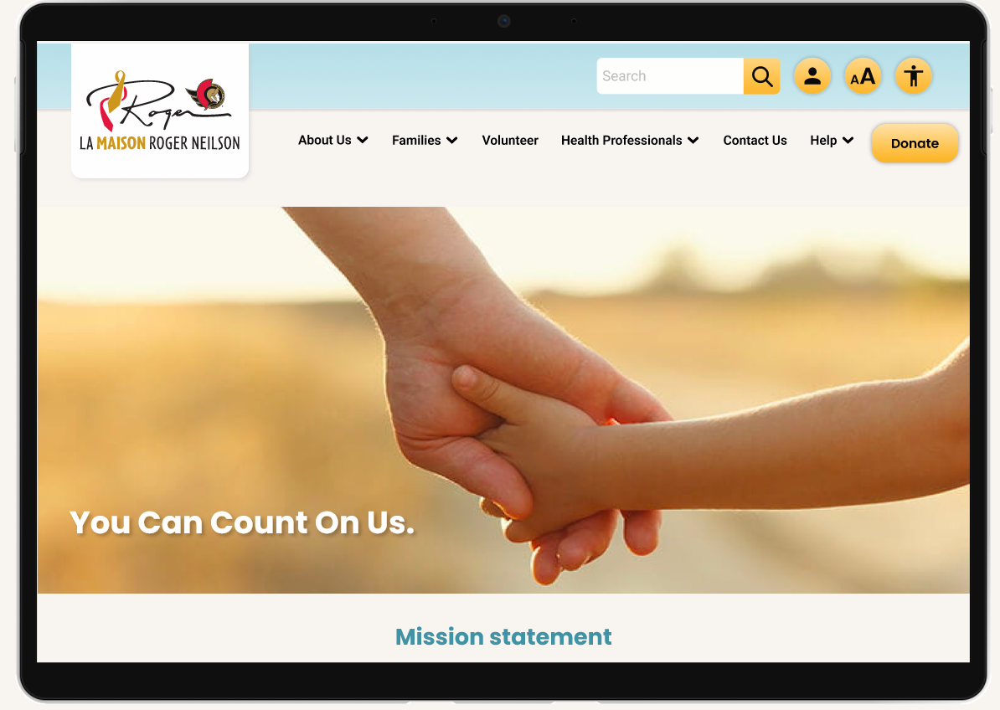

 
The design process I employ encompasses a meticulous and strategic approach that encompasses several key stages to ensure the creation of exceptional designs.
The design process I employ encompasses a meticulous and strategic approach that encompasses several key stages to ensure the creation of exceptional designs.
Starting with a thorough analysis of the project requirements and objectives, we gathered essential information and conducted extensive research to gain a deep understanding of the target audience, market trends, and industry best practices. Appropriate research methods were selected , such as interviews, surveys, usability testing, observations, and analytics analysis. We conducted usability tests to determine what the users need from the original website, and what we should focus on/work to improve for the users.
The collected data is then analyzed to identify patterns, trends, and key findings. This involved organizing and categorizing the data, identifying common themes, and extracting meaningful insights. The insights gained from the data analysis were synthesized to create user personas. That helped the design team empathize with and design for specific user groups.
Following the research phase, we proceeded to ideation and conceptualization, where we generated a range of innovative ideas and design concepts. This involved sketching, wireframing, and creating prototypes to visualize the proposed design solutions.
The volunteer application process has been redesigned to maximize a positive user experience. We've observed that users are less likely to complete the application process if required to re-enter information. How might we save a user's information to make the application process less redundant? We will measure the level of success by an increased volume of applications and time spent on the task.

Once the initial concepts have been refined, we transitioned into the implementation phase. Here, we leverage our technical expertise and proficiency in various design tools and software to bring the designs to life. This involved crafting visually appealing layouts, selecting appropriate color schemes, typography, and imagery, as well as ensuring a seamless and intuitive user experience (UX).
Furthermore, we prioritized usability testings and user feedback, conducting comprehensive user testing sessions to validate the effectiveness and efficiency of the design. By gathering insights and incorporating user feedback, we refined the design, ensuring that it aligns with the desired objectives and meets the needs and expectations of the end-users.
Our next steps for the website will be: 1.Hero banner carousel containing some of the existing features from the original home page (featured testimonials and latest events). 2.Contact Us Form. 3. Add French icon on navigation bar. 4. Iterate high contrast and larger font modes for accessibility increased legibility.